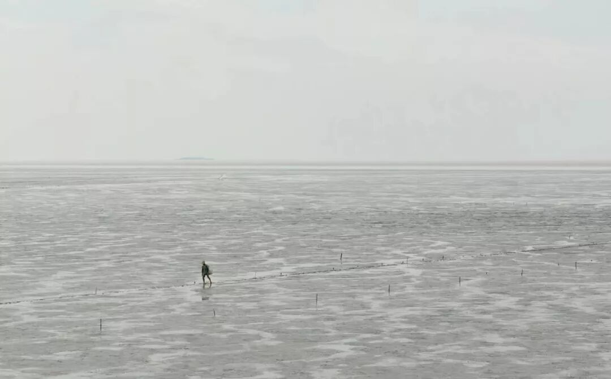

青年的动人之处，就在于勇气，和他们的远大前程。
2017年就过去了，真的不敢相信，就如同现在的我不相信自己已经20岁了，这种不相信是从肉体到灵魂的深切怀疑。
类似于开个玩笑，我突然忘却了自己的年龄，站在镜子面前的我，试图揣测着自己。
我的皮肤是如此的光滑细嫩，我的眼睛是那么的清澈透明，我的内心依旧单纯无暇。
按照这一切所推断，我该十二三岁才对。。。。。。
无论真假，这个结论让我高兴了一回。但我不能再装嫩了，新的一年到来，还是得真诚待人。
那么，现在所拍，所写都需归到2018年了，
对于17年，存在的只是些过去式，
在去年未完成之事，当然是可以放入18年，或者更长，19、20年都是正常的。
又或者，你的想法变了，这些事全部换掉，也是不错的选择。但啥事都不准备干，那就有点过分了。
那样，便是在劫难逃，你终究成为了生活的奴隶。
2018年，在这剩下的三百多天里。
我有想过干哪些事情，但最终干的如何，就只等19年再看了。
这并不是我缺乏自信心的表现，而是成熟了点，大话不敢轻易放。知道生活不易后，才会懂得啥事都无需急，慢慢来便是最好。
我总觉得，这不短不长的二十年中，树立目标的最后往往不切实际，走一步看一步却显得更加对自己负责些。
人世间无时无刻不在变化，一眼将一年，甚至一辈子望到尽头，是很难做到的。当然，我也不会去做，这是庸俗无趣的表现，我提醒着自己要尽量远离。

在这一年里，我觉得我应该将自己最真挚的心献给所爱之人，好好珍惜属于我俩的一切，这是其一。
另外也得有些勇气，去做一番斗争来维护自己的爱好，虽说下半年得实习工作，但再忙爱好不能丢，这是其二。
有了想做之事是好的，但也不能缺乏乐趣的存在。记得前些年，当自己还懵懂无知时，"乐趣"是很容易获得的。
放学后网吧的一个通宵，上课时的一本知音漫客，甚至是吃饭前老师的一句提前下课，总能让我兴奋不已，感受到乐趣的存在。
当时就是这样，以"乐趣"为主题都能写成一本书，而现在便不同了，薄薄的几页纸都得东凑西补。尽管这样，我们也不能轻易丢弃寻找乐趣的那腔热血。
这便是其三，是深深贯彻在其一、其二之中的。现实的生活中，增添了点梦幻色彩，那其一与其二使我获得了其三。
以上，便是我对这一年的寄语，
最后，用一句俗话收尾：虽然人生在世会有种种的不如意，但你仍可以在幸福与不幸中做出选择。
祝大家在新的一年里能实现自己所想做之事。明年的此时，如果我能说句"挺好"，那时，我一定难以抑制住自己内心的喜悦而蹦蹦跳跳起来。
新的一年里，愿大家开开心心的，能像个小孩子一样。